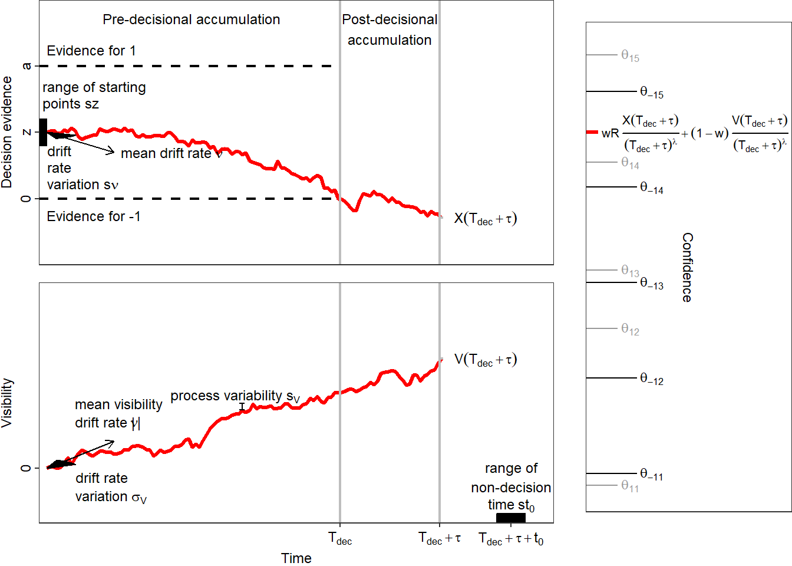

The dynamic visibility, time, and evidence model (dynaViTE)
Mathematical details
The decision process
Mathematically, the decision process is a Wiener process \(X\), bounded from below and above by two time-constant thresholds, \(0\) and \(a>0\). The decision process starts at a starting point \(X(0)=az\) and evolves with a constant drift \(\mu\) and a diffusion constant \(s\) (which is often set to 1 as a scaling factor when fitting the model to empirical data). In accordance with the drift diffusion model (Ratcliff & McKoon, 2008), the model includes between-trial variability of starting point and drift rate. The relative starting point \(z\) varies uniformly with range \(sz\) and the drift rate is normally distributed between trials with standard deviation \(s_\nu\) and mean \(\nu\). As soon as the process crosses one of the boundaries, a decision is triggered, i.e. the decision time is \(T_D = \min\{t |X(t)\notin [0,a]\}\) . The response \(R\) is 1, if \(X(T_D )\geq a\), and it is -1, if \(X(T_D )\leq 0\). Up to this point the model is identical to the drift diffusion model of decision-making. #### Post-decisional accumulation First, the model assumes that the decision process is not killed at decision time but continues to accumulate evidence for some period \(\tau\). This feature is called post-decisional accumulation (Pleskac & Busemeyer, 2010). #### Parallel accumulation of visibility Second, dynaViTE includes a second process evolving in parallel to the decision process. We refer to the second process as the visibility process. The visibility process is assumed to accrue information about task irrelevant stimulus features which are informative about task difficulty but not for stimulus identity. Formally, the visibility process is a second Wiener process \(Vis\), which starts at 0 and evolves with constant drift rate and diffusion constant. The diffusion constant of the visibility process is an extra parameter \(s_{Vis}\). The drift rate of the visibility process is also assumed to vary between trials according to a normal distribution with standard deviation \(\sigma_{Vis}\) and mean drift rate \(\mu_{Vis}\). #### Computation of the confidence variable The internal confidence variable is computed as a weighted sum of accrued evidence in the decision process and the visibility process during the decision and post-decisional accumulation time, divided by a power of the accumulation time. Formally, the internal confidence variable is represented by \[c_{dynWEV}=\frac{wR(X(T_D+\tau )-az)+(1-w)Vis(T_D+\tau )}{(T_D +\tau )^\lambda},\] where \(w\in [0,1]\) is the weight on decision evidence. The multiplication of the accumulated decision evidence with the decision response \(R\) leads to higher confidence when the accumulated evidence supports the decision. Because \(R=-1\) represents a “lower” decision, a smaller value of \(X(T_D+\tau )\) and thus a smaller value for \(X(T_D+\tau )-az\) would support the decision and thus increase confidence. The parameter \(\lambda \geq 0\) represent the penatly of accumulation time on confidence. The term in the denominator leads to a decrease of confidence for longer decision accumulation times, even if the final amount of evidence would be the same. The reasoning behind this is that longer responses are usually related to lower confidence (Rahnev et al., 2020).
The confidence variable is compared to a set of criteria \(\vartheta_{R,i},i=1,...k-1\) to form a discrete confidence judgment with \(k\) steps. Precisely, if the choice is \(R\) then the reported confidence is \(K\), if \(c_{dynaViTE} \in [\vartheta_{R,K-1},\vartheta_{R,K}]\), with \(\vartheta_{R,0} = -\infty\) and \(\vartheta_{R,k}=\infty\).
Connection to other models
This model includes some other dynamic models of confidence published in the literature before as special cases (Hellmann et al., 2023). Most importanty, the dynaViTE model is based on the dynWEV model which does not include the explicit accumulation time penalty in the confidence variable (i.e. \(\lambda=0\)). In addition, as the two-stage dynamic signal detection theory (2DSD; Pleskac & Busemeyer, 2010) is a special case of dynWEV for \(w=1\), is is also a special case for dynaViTE when \(\lambda=0\) and \(w=1\). Finally, we denote the special case of dynaViTE with only \(w=1\) as 2DSDT. In this case, the visibility process does not influence confidence at all, such that only the decision process determines choice as well as confidence via post-decisional accumulation. The confidence variable in 2DSDT is then solely based on accumulated evidence about stimulus identity over accumulation time, such that 2DSDT represents the analogous generalization of 2DSD with explicit influence of accumulation time in confidence.
Usage of the model with empirical data
The model can be applied to binary choice tasks. The direction of the decision drift rate usually depends on the true stimulus identity \(S\in \{-1, 1\}\). Moreover, in many experimental tasks, the difficulty of the decision is manipulated which is often assumed to change the magnitude \(d>0\) of the mean drift rate. Therefore, the mean decision drift rate could be computed by \(\nu=Sd\).
The visibility process is stochastically inpedendent of the decision process. However, in an experimental situation where task difficulty is manipulated, it may be plausible to assume that changes in difficulty may be percieved independently of the decision relevant information about stimulus identity. Therefore, the mean drift of the visibility process also depends on \(d\). So far, we used to set \(\mu_{Vis}=d\) directly in our applications (Hellmann et al., 2023). Thus, the visibility process is independent of the decision process, despite both being influenced by task difficulty \(d\). This also means, the visibility process has always a non-negative mean drift rate.